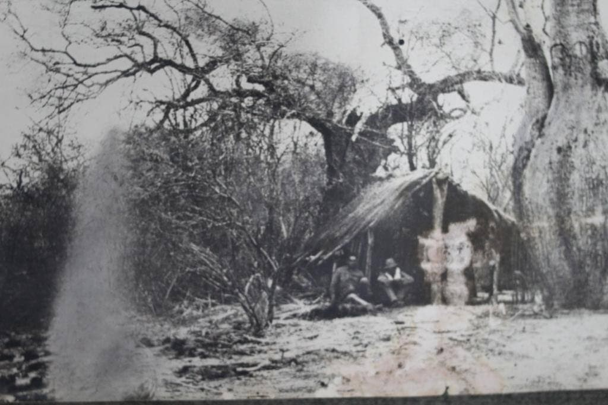

The Ceiba chodatii or samu'u trees were used during the Chaco War since their bark is so hard that they can stop projectiles and its interior is soft enough to be hollowed out with a shovel, the Paraguayan soldier entered inside to defend against the enemy.
These types of machine gun nests were made by both Paraguayans and Bolivians.
In addition, the samu'u with the largest trunk circumference 9.11 m, winner of the "Colossus of the Earth" contest in its ninth edition Year 2020, is located in Fortín Toledo.